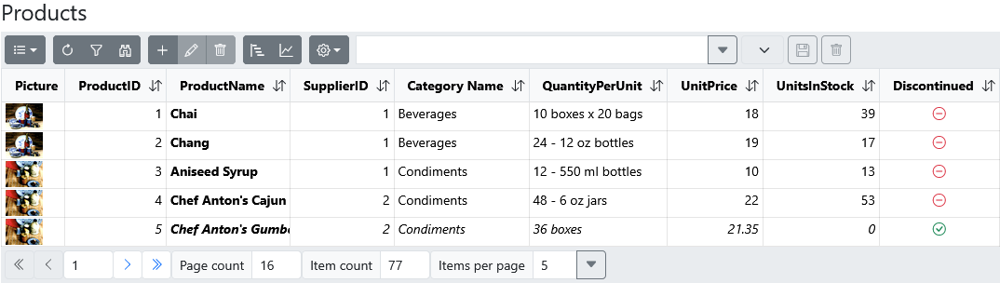

Custom Entity
RGF Route
From the perspective of the RecroGrid Framework, displaying an entity encompasses presenting the list associated with the entity collection, as well as showing a specific data record in detail within a Form view.
During the installation, it was configured for the Router to use the RGF AdditionalAssembly, and the Layout includes the RgfRootComponent. As a result, when navigating to the /rgf/entity/{Entity Name} page in the @Body, the desired entity is displayed.
<Router AppAssembly="@typeof(App).Assembly"
AdditionalAssemblies="new[] { typeof(Recrovit.RecroGridFramework.Client.Blazor.Components.RgfEntityComponent).Assembly }">
@inherits LayoutComponentBase
<RgfRootComponent >
@Body
</RgfRootComponent>

Manual display of entity
The entity can be displayed directly anywhere using the EntityComponent.
@page "/EntityTest"
<PageTitle>EntityTest</PageTitle>
<EntityComponent EntityParameters="@(new RgfEntityParameters("RG_Product_1"))" />
To extend the functionality of the entity, you need to create a custom component.
@* ProductComponent.razor *@
<EntityComponent EntityParameters="ProductEntityParameters" />
@code {
[Parameter, EditorRequired]
public RgfEntityParameters EntityParameters { get; set; } = null!;
public RgfEntityParameters ProductEntityParameters
{
get
{
EntityParameters.TitleTemplate = (context) => @<h4>Products1</h4>;
return EntityParameters;
}
}
}
To ensure that the system uses this custom component for every reference to this entity, the component must be registered with RGF. When a unique component associated with an entity is registered, the system can utilize it in places where it needs to be displayed due to the connection of another entity. Examples of such cases include an embedded list or selecting from a list.
RgfBlazorConfiguration.RegisterEntityComponent<ProductComponent>("RG_Product_1");